player notes
think messages from dark souls
leave a message in a map, anyone on any server can see it as long as they have the addon and are hooked up to the web!
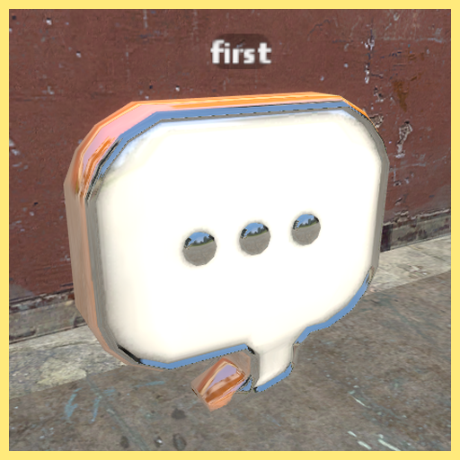
published 2/5/24
think messages from dark souls
leave a message in a map, anyone on any server can see it as long as they have the addon and are hooked up to the web!
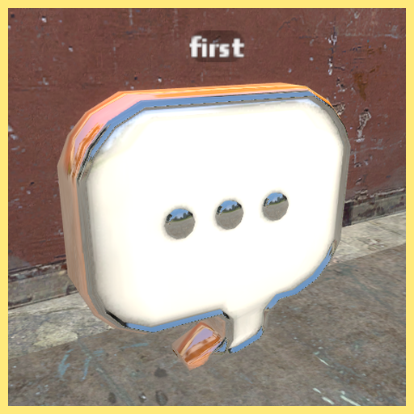
published 2/5/24
MOAR robots
freefilesvirus sells out
3 new robots, a cop, a kleptomaniac, and a janitor
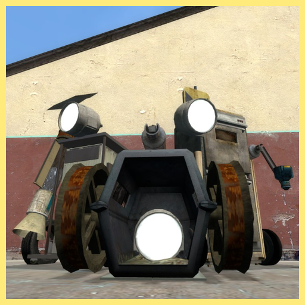
published 2/3/24
freefilesvirus sells out
3 new robots, a cop, a kleptomaniac, and a janitor
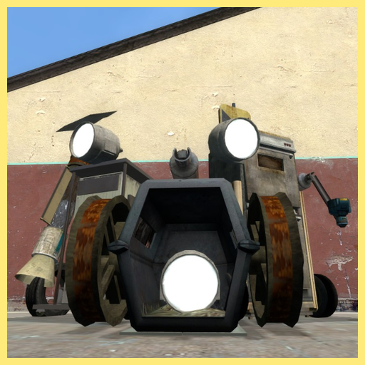
published 2/3/24
plugs and sockets
plug things, socket things, and anything inbetween. now supports wiremod!
was stuck in ffvjunk for a long time. making it duplicator compatible took over 90% of the time spent making this addon
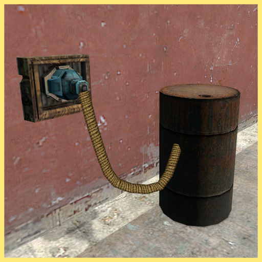
published 1/21/24
plug things, socket things, and anything inbetween. now supports wiremod!
was stuck in ffvjunk for a long time. making it duplicator compatible took over 90% of the time spent making this addon
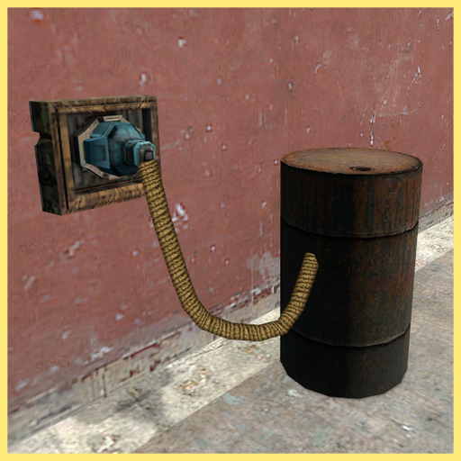
published 1/21/24
observation bot
an empty headed little* barrel boy who wanders around and looks for things to take pictures of
robots are cool. this was the first npc ive made, and more robots will probably come
*he isnt really that little. kinda oppresive actually
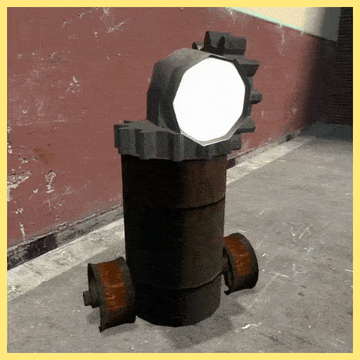
published 1/13/24
an empty headed little* barrel boy who wanders around and looks for things to take pictures of
robots are cool. this was the first npc ive made, and more robots will probably come
*he isnt really that little. kinda oppresive actually
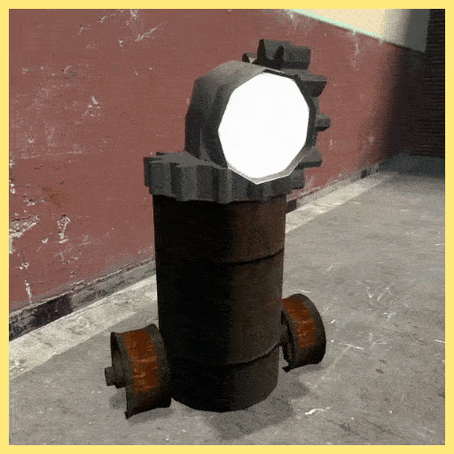
published 1/13/24
huge hand saw
a conglomeration of props that make up this scary looking saw thing
primary fire spins up the saw, doing rapid damage to whatever youre looking at
secondary fire launches the saw, the speed it gets launched out at depends on how quick its spinning so make sure youre revved up before you shoot
this was made to test out swep construction kit but turned out to be a lot of fun to use
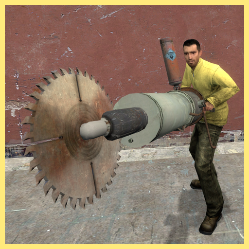
published 12/29/23
a conglomeration of props that make up this scary looking saw thing
primary fire spins up the saw, doing rapid damage to whatever youre looking at
secondary fire launches the saw, the speed it gets launched out at depends on how quick its spinning so make sure youre revved up before you shoot
this was made to test out swep construction kit but turned out to be a lot of fun to use
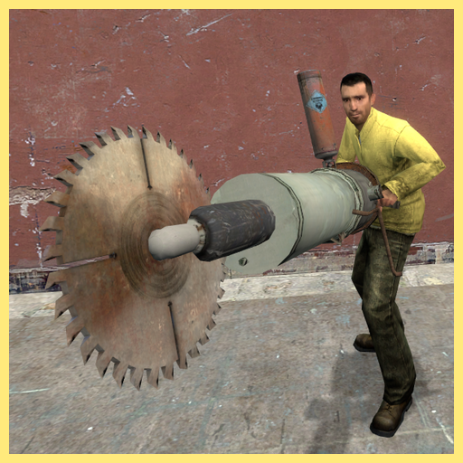
published 12/29/23
harpoon swep
this is my favorite addon that ive made
a harpoon that you can throw, when it hits a wall itll stick into it or if it hits a prop itll weld onto it
it can also impale npcs and stick them to walls or props, as seen in the image below
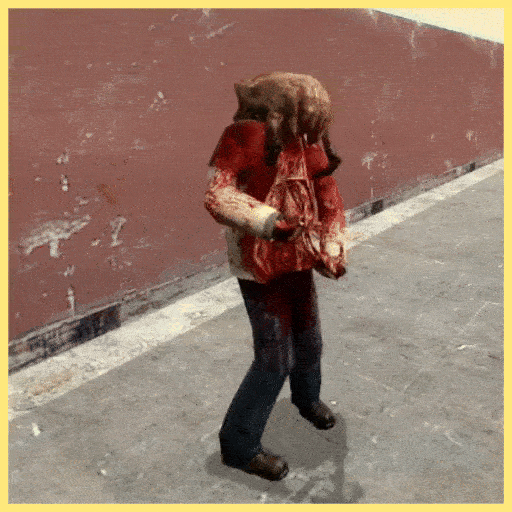
published 12/25/23
this is my favorite addon that ive made
a harpoon that you can throw, when it hits a wall itll stick into it or if it hits a prop itll weld onto it
it can also impale npcs and stick them to walls or props, as seen in the image below
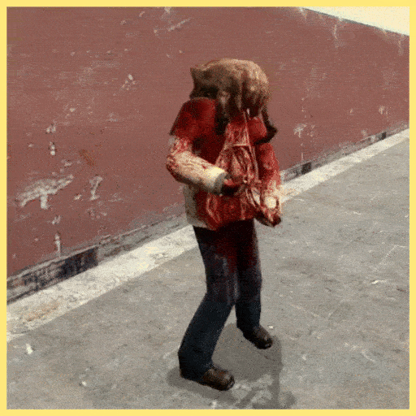
published 12/25/23
quick alignment
another utility addon, a recreation of the easy alignment tool before it seemed to disappear from the workshop one day
an stool that will align props together on any combination of the x, y, and z axes
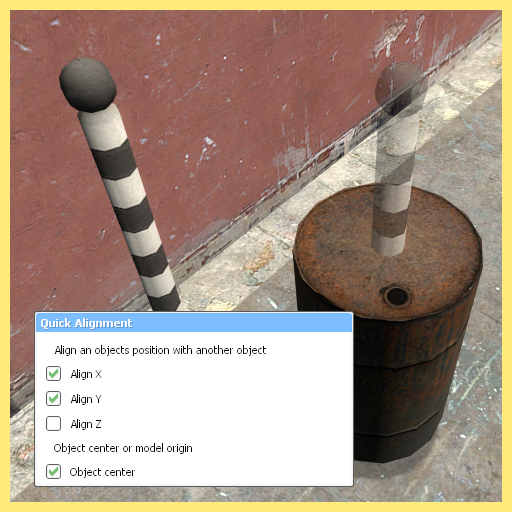
published 12/22/23
another utility addon, a recreation of the easy alignment tool before it seemed to disappear from the workshop one day
an stool that will align props together on any combination of the x, y, and z axes
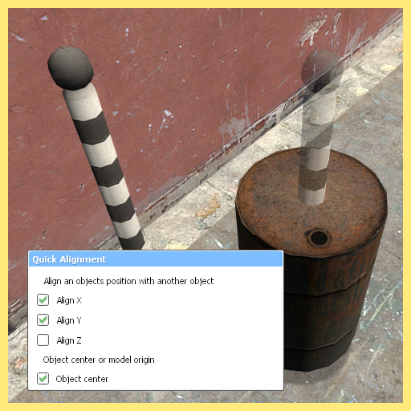
published 12/22/23
quick visibility
option in the context menu that lets you toggle the visibility of whatever
functionally does the exact same thing as getting out the color tool and putting transparency all the way down, just a lot more convenient
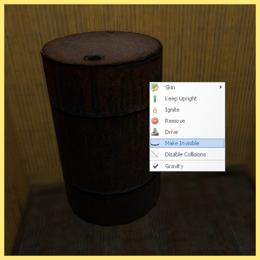
published 12/19/23
option in the context menu that lets you toggle the visibility of whatever
functionally does the exact same thing as getting out the color tool and putting transparency all the way down, just a lot more convenient
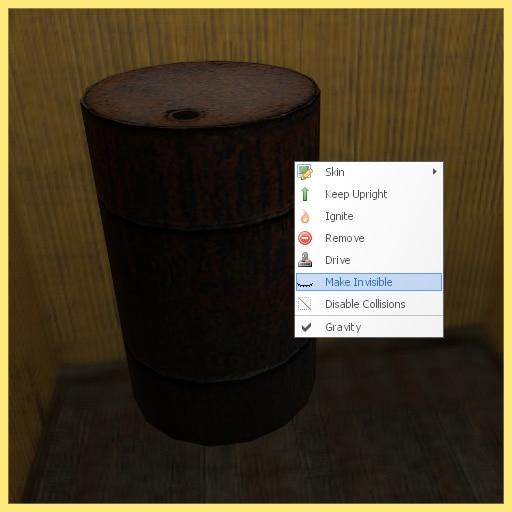
published 12/19/23
industrial shredder
shreds most anything you could put in it. best with props, worst with ragdolls
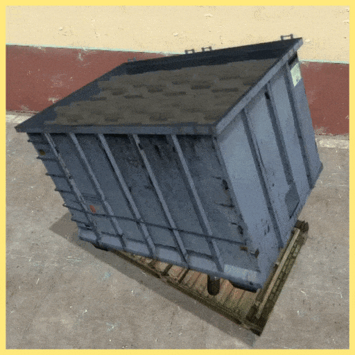
published 12/17/23
shreds most anything you could put in it. best with props, worst with ragdolls
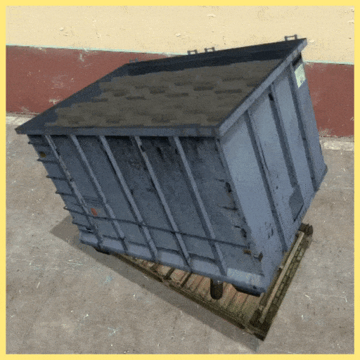
published 12/17/23
live grenade
zombine swep
you cant throw it or even holster it, and after 3 seconds it explodes like a normal grenade
its not a well written addon but i like it its funny
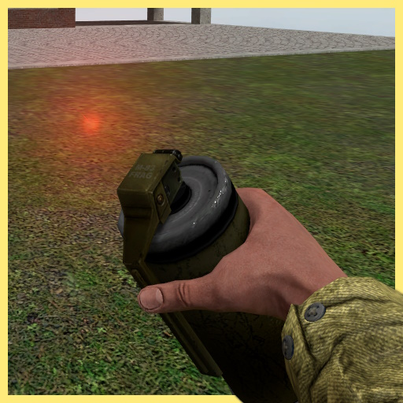
published 12/12/23
zombine swep
you cant throw it or even holster it, and after 3 seconds it explodes like a normal grenade
its not a well written addon but i like it its funny
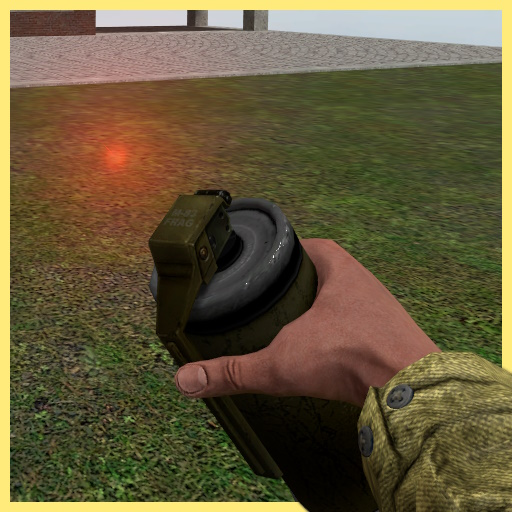
published 12/12/23
skelifier
unlike shadow hunt which was a complete flop, this addon got really popular and made it to the front page! despite that, it sucks.
its a stool and thing in the context menu that will skelify some npcs and ragdolls by deleting them and spawning a skeleton ragdoll in the exact same pose, "inspired" by the thing in entropy zero 2 that does the exact same thing but better
also, first yellow border icon
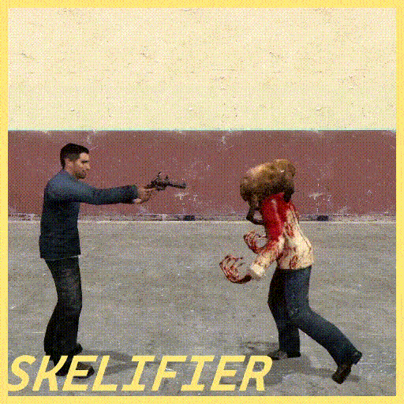
published 12/10/23
unlike shadow hunt which was a complete flop, this addon got really popular and made it to the front page! despite that, it sucks.
its a stool and thing in the context menu that will skelify some npcs and ragdolls by deleting them and spawning a skeleton ragdoll in the exact same pose, "inspired" by the thing in entropy zero 2 that does the exact same thing but better
also, first yellow border icon
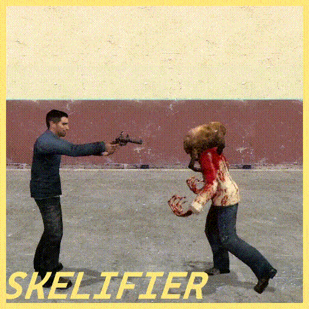
published 12/10/23
shadow hunt
the first addon i published to the workshop, and the most ambitious until observation bot... whoops
a gamemode where each round 1 person is picked as the shadow and the rest are survivors, the shadow tries to kill the survivors while the survivors try to survive until the round ends. more information on the steam page
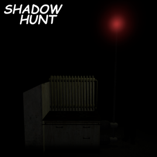
published 12/1/23
the first addon i published to the workshop, and the most ambitious until observation bot... whoops
a gamemode where each round 1 person is picked as the shadow and the rest are survivors, the shadow tries to kill the survivors while the survivors try to survive until the round ends. more information on the steam page
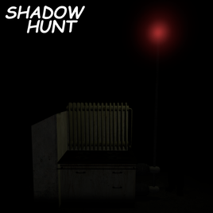
published 12/1/23